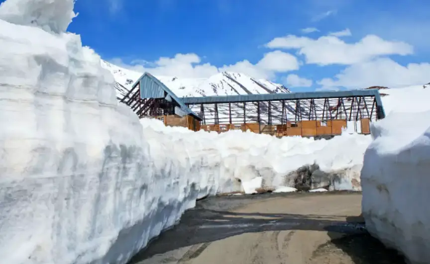
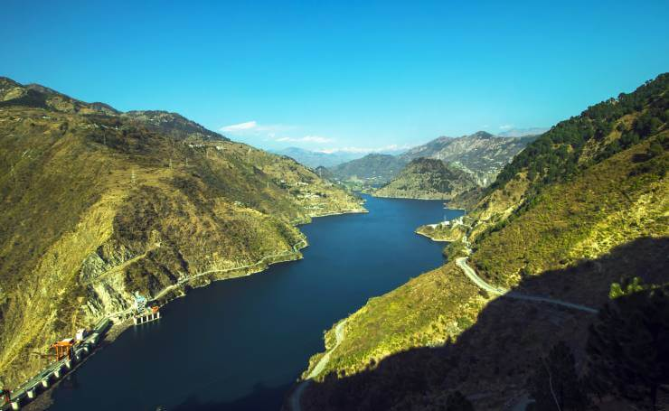

TOP PLACES TO VISIT IN HIMACHAL
With snow-capped mountains to plunging river valley, age-old monasteries to quaint churches, Himachal Pradesh makes for a holiday destination for all.This is popularly renowned for its Himalayan landscapes and popular hill-stations. Many outdoor activities such as rock climbing, mountain biking, paragliding, ice-skating, trekking, rafting, and heli-skiing are popular tourist attractions in Himachal Pradesh.
Kullu Manali Tour

Kullu Manali is one of those exquisite destinations that are extremely popular among holiday enthusiasts worldwide. It is one of the most
popular hill station tourist destinations to visit in India. Enveloped by the stunning snow-clad Himalayas, Kullu Manali is replete with many
beautiful prominent places like Solang Valley, Rohtang Pass, Gadhan Thekchoking Gompa, Vashist hot water springs and so on.
Chamera Lake

Riding a boat along the glistening Chamera Lake is one of the best things to do in Dalhousie. An artificial lake located at a height of about
760 metres, Chamera Lake serves as a source of water for the nearby areas. The lake is fed by Chamera Dam, which is facilitated by the
water of the Ravi River. Surrounded by gorgeous valleys of beautiful Deodar and Pine trees, Chamera Lake is one of the best places to
travel in Dalhousie. The environment around the pristine lake is astounding and moreover, the view of the lake from the top is truly amazing.
Chail Hill Station

A small hill station at an elevation of 2250m above sea level, Chail is a perfect destination to be. It is enveloped by soaring pine and deodars
and snow covered mountains attracting the travelers from far and wide. It is indeed the perfect place to unwind and relax in the lap of the
nature. Erected by Bhupinder Singh, Maharaja of Patiala in 1891, one will be mesmerized by the scenic beauty of Chail. It tenders isolation
and peace away from the hustle and bustle of city life.